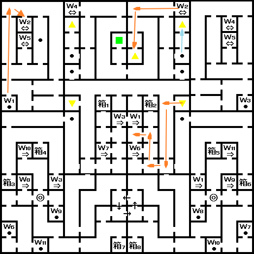
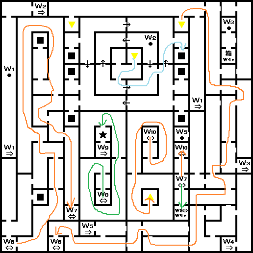
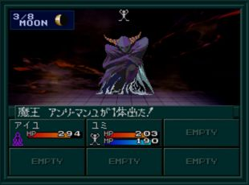
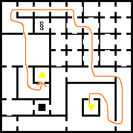

봉인이 풀리면서 학교 상층으로 진행이 가능해진다. (4F~11F)
4F
5F
- ★ : 마왕 안리・만유
BOSS:마왕 안리・만유
| 이름 | Lv82 魔王アンリ・マンユ |
|---|---|
| HP | 989 |
| 마법/특기 | マハラギダイン／マハザンダイン／ムドオン／パララアイ／サマリカーム |
체력은 낮지만, 전체적으로 강하다. 보스보다 레벨이 높으면 중마로 만들 수 있다는 소문이 있다. (미확인)
매우 중요한 것은 쓰러뜨린 후 청동의 상자로 이 보스를 불러낼 수 있다는 것이다. 대량의 경험치 획득하는데 사용하자.
6F
7F~11F
간단한 구조라서 금방 11F까지 올라갈 수 있다.11F에서 BOSS:마신황 하자마와 전투
BOSS:마신황 하자마

유미, 찰리, 아키라 루트의 최종 보스
| 이름 | Lv80 魔神皇ハザマ |
|---|---|
| HP | 20000 |
| 마법/특기 | マハラギダイン／マハブフダイン／マカラカーン／アカシャアーツ／菩薩掌／ソウルスマッシュ／ランダマイザ |
| 유효 | 검, 총, 검(악마), 공격(악마), 기술(악마), 화염, 충격, 만능 |
| 무효 | 돌격(악마), 빙결, 전격, 신경, 마력, 속박 |
| 반사 | 파마, 주살 |
| 추천 파티 구성 | |
|---|---|
| 전열 | 공격력이 높고, 공격 회수가 많은 캐릭터 |
| 후열 | 캬쟈계, 운다계 마법을 사용하는 캐릭터 데쿤다를 사용하는 캐릭터 회복 마법을 사용하는 캐릭터 |
- 하자마의 기술 중 란다마이자(ランダマイザ)는 아군의 공격력, 방어력, 명중률을 내리는 마법으로 파트너나 중마가 데쿤다(デクンダ)를 습득하고 있으면 무효화 할 수 있어서 좋다.
- 카지노 또는 분노계 CB에서 얻을 수 있는 라스터캔디(ラスタキャンディ)를 적극 사용해서 아군을 버프 시키고, 하자마는 데쿤다를 사용하지 않기 때문에 운다계(라쿤다) 마법으로 디버프를 걸어주자.
분기
유미 루트는 마신황 하자마를 쓰러뜨리면 엔딩레이코 루트는 정신세계로 진행된다.